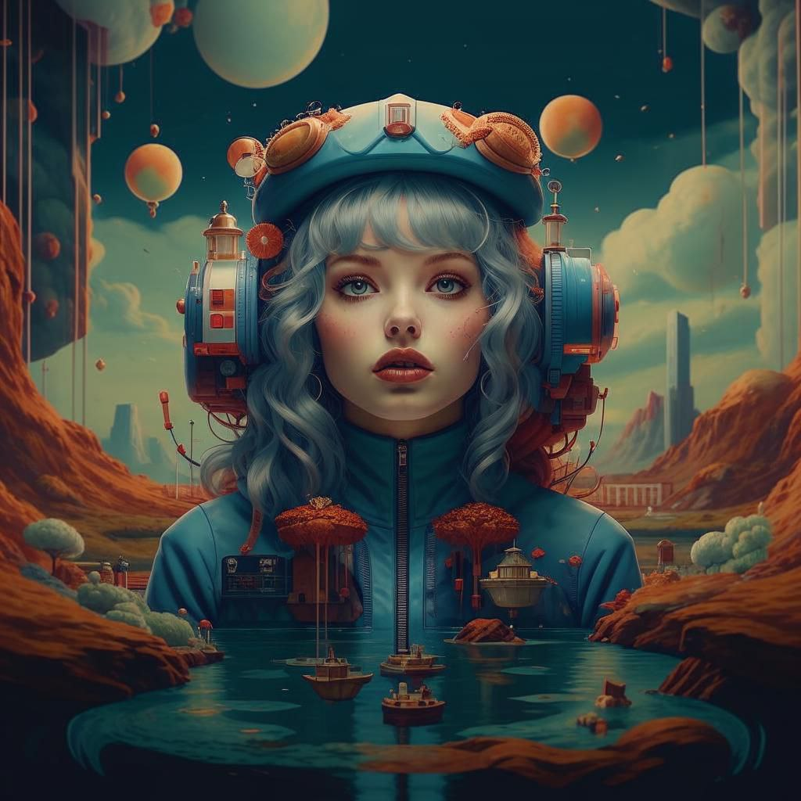
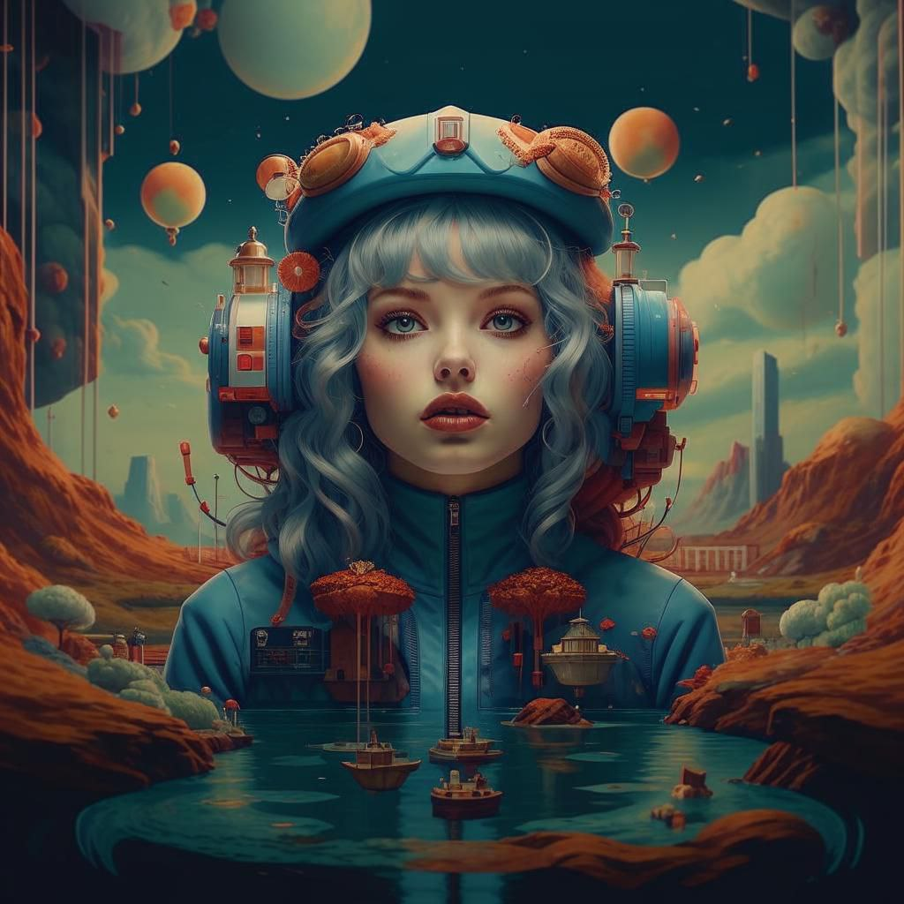

We present Kandinsky 3.1, the follow-up to the Kandinsky 3.0 model, a large-scale text-to-image generation model based on latent diffusion, continuing the series of text-to-image Kandinsky models and reflecting our progress to achieve higher quality and realism of image generation, which we have enhanced and enriched with a variety of useful features and modes to give users more opportunities to fully utilise the power of our new model.

Kandinsky 3.0 is a latent diffusion model, the full pipeline of which includes a text encoder for processing a prompt from the user, a U-Net for predicting noise during denoising (reverse) process and a decoder for image reconstruction from the generated latent. During the U-Net training, the text encoder and image decoder were completely frozen. The whole model contains 11.9 billion parameters. For extended description of architecture please refer to technical report.
Diffusion models have problems with fast image generation. To address this problem, we trained a Kandinksy Flash model based on the Adversarial Diffusion Distillation approach with some modifications: we trained the model on latents, which reduced the memory overhead and removed distillation loss as it did not affect the training.
 

Prompt plays crucial role in text-to-image generation. So, in Kandinsky 3.1 we decided to use language model for making prompt better. We used Intel's neural-chat-7b-v3-1 with the following system promt as the LLM:
### System: You are a prompt engineer. Your mission is to expand prompts written by user. You should provide the best prompt for text to image generation in English.
### User:
{prompt}
### Assistant:
{answer of the model}
To improve the generation quality of the inpainting model, we additionally trained the model on the object detection dataset. This allowed to get more stable generation of objects.
In the new Kandinsky 3.1 version, it is now possible to generate 4K resolution images using the KandiSuperRes model. The architecture used was the Kandinsky 3.0 architecture, which was modified as follows: the model became pixel-based to avoid compression artefacts, a modified UNet was used, and during training diffusion predicted the original image instead of noise.
| Dataset | Model | FID↓ | PSNR↑ | SSIM↑ | L1↓ |
|---|---|---|---|---|---|
Wikidata 5k |
Real-ESRGAN | 9.96 | 24.48 | 0.73 | 0.042 |
| Stable Diffusion | 3.04 | 25.05 | 0.67 | 0.043 | |
| KandiSuperRes | 0.89 | 28.52 | 0.81 | 0.025 | |
RealSR(V3) |
Real-ESRGAN | 73.26 | 23.12 | 0.72 | 0.061 |
| Stable Diffusion | 47.79 | 24.85 | 0.67 | 0.049 | |
| KandiSuperRes | 47.37 | 25.05 | 0.75 | 0.046 | |
Set14 |
Real-ESRGAN | 115.94 | 22.88 | 0.62 | 0.056 |
| Stable Diffusion | 76.32 | 23.60 | 0.57 | 0.052 | |
| KandiSuperRes | 61.00 | 25.70 | 0.70 | 0.039 |
To allow image generation in based on reference image we train IP-Adapter, which to generate image based on the style of image, text and generate variations of the image

@misc{arkhipkin2023kandinsky,
title={Kandinsky 3.0 Technical Report},
author={Vladimir Arkhipkin and Andrei Filatov and Viacheslav Vasilev and Anastasia Maltseva and Said Azizov and Igor Pavlov and Julia Agafonova and Andrey Kuznetsov and Denis Dimitrov},
year={2023},
eprint={2312.03511},
archivePrefix={arXiv},
primaryClass={cs.CV}
}